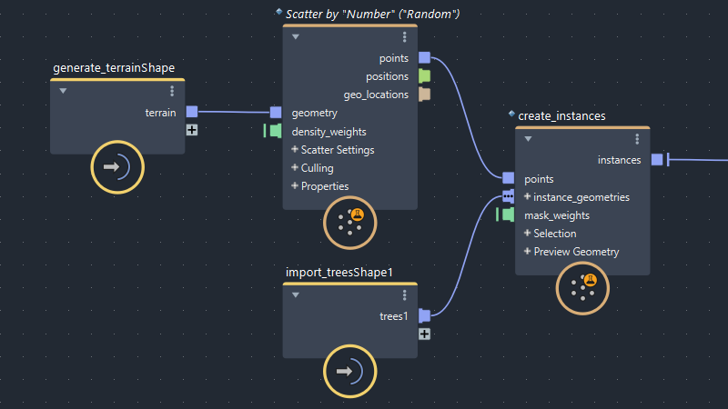

您可以在 Maya 场景中创建一个图表链，其中每个图表的输出作为下一个图表的输入。除非需要，否则不会重新编译或重新计算链中之前的图表，因此您可以更改后续图表，且计算开销较低。它还允许您创建更易读且更具逻辑组织性的场景和图表。

要创建图表链，请将图表从 Maya 的“大纲视图”(Outliner)拖放到“Bifrost 曲线图编辑器”(Bifrost Graph Editor)中的第二个图表。这将创建一个输入节点，用于在第二个图表中使用第一个图表的 Object 和 array<Object> 输出。这相当于在 Maya“节点编辑器”(Node Editor)中将一个图表的输出手动连接到另一个图表的输入。
拖放的图表在其顶层必须至少具有一个 Object 或 array<Object> 类型的输出。不支持仅连接到 terminal 节点的几何体。
这样，您可以快速轻松地创建一个图表链，因此，除非输入发生变化，否则无需重新计算第一个图表。例如，可以在第一个图表中放置大型模拟，然后使用第二个图表快速试验模拟后效果。